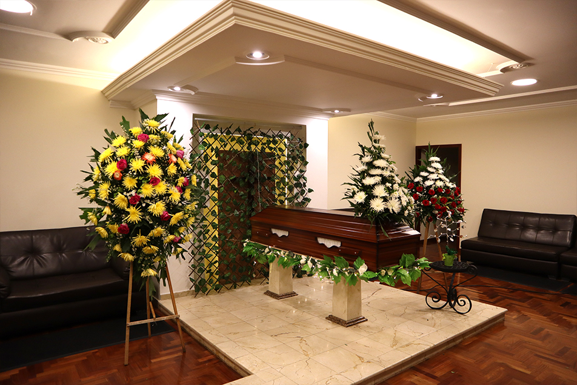
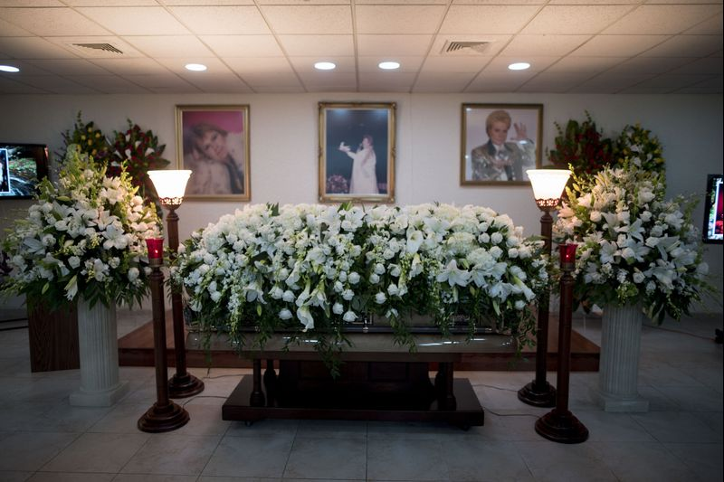
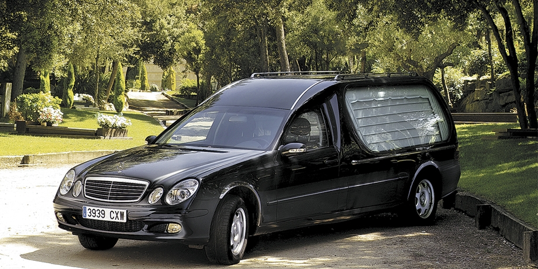

A lo largo de estos años, hemos logrado plena expansión de nuestra estructura territorial, conformada actualmente por 123 salas de velación propias y con más de 200 convenios; asistidos por profesionales en el ramo a nivel nacional.

Salas de Velación
Actualmente la red de laa Funeraria Áncora, cuenta con 123 salas de velación propias, diseñadas para el donfort de los dolientes, familiares y amigos, del finado.
Excedentes, en las salas de velación
Además del homenaje funerario, tenemos a disposición de nuestros usuarios una gran variedad de servicios complementarios para suplir todas sus necesidades.

Servicios Particulares
Convenios de servicios funerarios fuera de las sedes Propias. Nuestro Portafolio ha sido diseñado para ofrecer Servicios a la medida de cada usuario.

Transporte.
La prestación de nuestros servicios está a cargo de profesionales expertos en el ramo. El traslado del cuerpo a los oficios religiosos y destino final es efectuado por conductores elegantes y cultos.